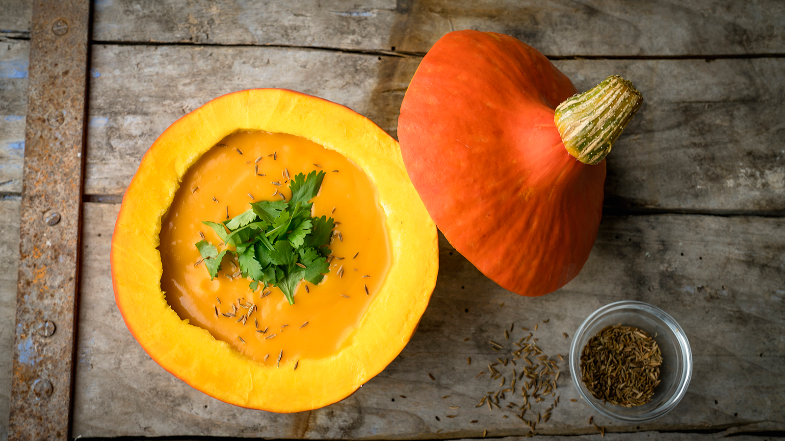

Beschrijving
Een heerlijk basisrecept voor verse pompoensoep die je eenvoudig en snel zelf maakt. Geniet extra van de herfst met dit verwarmende recept! Lekker bij de lunch met een broodje of als voorgerecht.
Ingrediënten
Instructies
- Snijd de pompoen in stukken en verwijder de schil of gebruik een zakje of doosje kant-en-klare pompoenblokjes. Zet een pan op het vuur en verhit de boter of olie en voeg de stukken pompoen toe.
- Snijd de ui en tomaten grof en doe deze ook in de pan. Bak ongeveer 3 minuutjes en giet er dan het water bij.
- Verkruimel het bouillonblokje boven de pan en breng het aan de kook. Laat alles nu ongeveer 20 minuten koken op laag vuur. Pak de staafmixer en pureer alles tot een gladde soep.
- Voeg de room toe en mix alles nog een keer goed door. Zet nog 2 min op het vuur en serveer dan met wat peterselie, pompoenpitten en wat extra room naar smaak. Rooster eventueel de pompoenpitjes.
- Tip: vervang de room eens door kokosmelk, daar krijgt je soep een lekker Oosters tintje van.